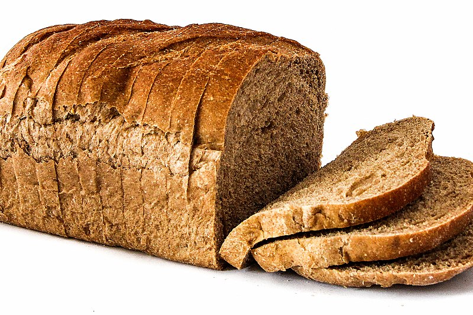

Bread

A loaf of brown bread sliced to uniform thickness
Ingredients
- 2 cups warm water (110 degrees F/45 degrees C)
- 1 1/2 cup of white sugar
- 1 1/2 tablespoons active dry yeast
- 1 1/2 teaspoons salt
- 1/4 cup vegetable oil
- 5-6 cups flour
STEPS
- ASSEMBLE BREAD INGREDIENTS
- DISSOLVE THE YEAST AND ACTIVATE IT BY PROOFING
- ADD REMAINING INGREDIENTS AND MIX
- KNEAD THE BREAD
- FIRST RISE
- PUNCH DOUGH AND SHAPE IT
- SECOND RISE
- BAKE THE BREAD
- COOL THE BREAD